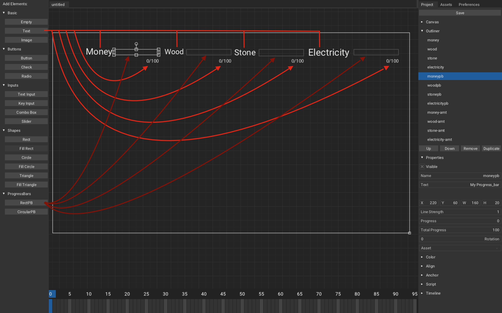

In Resources, we will involve resource producing and collecting from buildings.
Rechecking our concept, when we place buildings, we want it to produce some resources at cost of some other resources, here the small table from the concept:
| Buildings | Costs | Produce |
|---|---|---|
| House | Woods, Stones, Electricity | Money, Happiness |
| Parks | Woods, Stones, Electricity | Money, Happiness |
| Sawmills | Money, Electricity | Woods, Pollution |
| Quarry | Money, Electricity | Stones, Pollution |
| Powerplants | Money | Electricity, Pollution |
Table of contents:
RESOURCES
RESOURCES
Buildings will produce given amount of resources in given interval of time. We want to make:
- House produce 5 money every 5 sec at cost of 10 woods and 10 stones.
- Sawmill produce 5 woods every 5 sec at cost of 10 money.
- Quarry produce 5 stones every 5 sec at cost of 10 money.
- Powerplant produce 10 electricity every 5 sec at cost of 20 money.
- Electricity to be used by house, sawmill, quarry to produce their resources, if they don't get enough electricity, they stop production.
(values are not absolute, it needed to be tweak for final game)
BUILDING PROPERTIES STRUCTURE
Let create proper structure of our building property, where we will store buildings properties such as maximum buildings allowed, cost, production, etc.
- Create new scene Haxe trait
WorldController, this will act as our main world controller.
// WorldController.hx
package arm;
//Building properties structure
typedef BuildingProp = {
//at: how many building are there currently?, max: how many maximum buildings can be spawned?
at:Int, max:Int,
//Cost amount of money, wood, stones, electricity
costM:Int, costW:Int, costS:Int, costE:Int,
//Produce amount of money, woods, stones, electricity
prodM: Int, prodW:Int, prodS:Int, prodE:Int,
//Produce amount of happiness, pollution
prodH:Int, prodP:Int,
//Timetask id
tt: Int
}
class WorldController extends iron.Trait {
//Set houses prop
public static var houseProp: BuildingProp = {
at:0, max:2, costM: 0,costW:10, costS:10, costE:5, prodM: 5, prodW:0, prodS:0, prodE: 0, prodH:3, prodP:0, tt: 0
};
//Set parks prop
public static var parkProp: BuildingProp = {
at:0, max:2, costM: 0,costW:10, costS:10, costE:5, prodM: 5, prodW:0, prodS:0, prodE: 0, prodH:5, prodP:0, tt: 0
};
//Set sawmills prop
public static var sawmillProp: BuildingProp = {
at:0, max:2, costM: 10,costW:0, costS:0, costE:5, prodM: 0, prodW:5, prodS:0, prodE: 0, prodH:0, prodP:3, tt: 0
};
//Set quarrys prop
public static var quarryProp: BuildingProp = {
at:0, max:2, costM: 10, costW:0, costS:0, costE:5, prodM: 0, prodW:0, prodS:5, prodE: 0, prodH:0, prodP:3, tt: 0
};
//Set powerplants prop
public static var powerplantProp: BuildingProp = {
at:0, max:2, costM: 20, costW:0, costS:0, costE:0, prodM: 0, prodW:0, prodS:0, prodE: 10, prodH:0, prodP:5, tt: 0
};
public function new() {
super();
}
}
Code Explanation
We create buildings properties structure to store information and fields which are not needed are set to '0' as we don't want to create structure for each building.
We set properties of buildings
houseProp,parkProp, etc.
RECALCULATE BUILDINGS
We will recalculate buildings from buildings structure and set building properties structure and limit amount of particular buildings that can be spawned.
// BuildingController.hx
~
import arm.WorldController;
typedef Building = {~}
class BuildingController extends iron.Trait{
~
public static var enoughBuildings = true;
public function new(){~}
~
public static function spawnBuilding(type: Int){
var world = WorldController;
//Check if this type of buildings reached max amount
checkMaxBuilding(type);
//If there is not enough building
if(!enoughBuildings){
Scene.active.spawnObject("bld_"+type, null, function(bld: Object){
~
buildings.push({~});
//Recalculate amount of buildings
recalculateBuildings();
unselectBuilding();
selectBuilding(bld.name);
});
}
}
public static function removeBuilding(){
Scene.active.getChild(selectedBuilding).remove();
removefromArray(selectedBuilding, buildings);
//Recalculate amount of buildings
recalculateBuildings();
unselectBuilding();
}
~
static function recalculateBuildings(){
var world = WorldController;
//Create buildings type list
//[House, parks,......, powerplant]
var buildingList = [0, 0, 0, 0, 0, 0, 0, 0];
for(building in buildings){
switch (building.type){
//Set increase building list by one of certain type
case 1: buildingList[0] += 1;//House
case 2: buildingList[1] += 1;//Park
case 5: buildingList[4] += 1;//Sawmill
case 6: buildingList[5] += 1;//Quarry
case 8: buildingList[7] += 1;//Powerplant
}
}
//Set 'at' of building property
world.houseProp.at = buildingList[0];
world.parkProp.at = buildingList[1];
world.sawmillProp.at = buildingList[4];
world.quarryProp.at = buildingList[5];
world.powerplantProp.at = buildingList[7];
}
static function checkMaxBuilding(type:Int){
var world = WorldController;
switch(type){
//Check if building of type reached max amount, then set enough buildings to true else false
case 1: world.houseProp.at == world.houseProp.max ? enoughBuildings = true : enoughBuildings = false;
case 2: world.parkProp.at == world.parkProp.max ? enoughBuildings = true : enoughBuildings = false;
case 5: world.sawmillProp.at == world.sawmillProp.max ? enoughBuildings = true : enoughBuildings = false;
case 6: world.quarryProp.at == world.quarryProp.max ? enoughBuildings = true : enoughBuildings = false;
case 8: world.powerplantProp.at == world.powerplantProp.max ? enoughBuildings = true : enoughBuildings = false;
}
}
}
Code Explanation
In
recalculateBuildings(), we create array of building list, each index represent building type. Then we loop through our array of buildings and switch through building types and increase the building list by one if type matches. And finally set 'at' of our buildings property from building list.In
checkMaxBuilding(*type*), we switch through types, if type match we check building of type's property and check if no. of buildings is same as maximum limit, if true than set enoughBuildings to true, else false.In
spawnBuilding(*type*), check if maximum amount of buildings of particular type reached, if not true than allow to spawn, and then on spawning recalculate buildings again.In
removeBuilding(), recalculate buildings again after selected building is removed.
RECALCULATE RESOURCES
We will recalculate resources after we spawn the building, i.e., after spawning we subtract the building's resource cost from total resources. And we will also limit buildings from being spawned if total resource is less than building's resource cost.
// WorldController.hx
~
typedef BuildingProp = {~}
class WorldController extends iron.Trait {
//Set resources with array -> [at, max]
public static var happiness:Array<Int> = [50, 100];
public static var money:Array<Int> = [50, 100];
public static var woods:Array<Int> = [50, 100];
public static var stones:Array<Int> = [50, 100];
public static var electricity:Array<Int> = [0, 100];
public static var houseProp: BuildingProp = {~};
public static var parkProp: BuildingProp = {~};
public static var sawmillProp: BuildingProp = {~};
public static var quarryProp: BuildingProp = {~};
public static var powerplantProp: BuildingProp = {~};
public function new(){~}
}
Code Explanation
- We set resources with array as [amount of this resource, maximum resource storeable].
// BuildingController.hx
~
typedef Building = {~}
class BuildingController extends iron.Trait{
~
public static var enoughBuildings = true;
public static var enoughResources = true;
public function new(){~}
~
public static function spawnBuilding(type: Int){
var world = WorldController;
checkMaxBuilding(type);
//Check if resources reached max amount
checkResources(type);
//If there is not enough building and there is enough resource
if(!enoughBuildings && enoughResources){
Scene.active.spawnObject("bld_"+type, null, function(bld: Object){
~
buildings.push({~});
recalculateBuildings();
//Recalculate amount of resources of this type
recalculateResources(type);
unselectBuilding();
selectBuilding(bld.name);
});
}
}
public static function removeBuilding(){~}
~
static function recalculateBuildings(){~}
static function checkResources(type:Int){
var world = WorldController;
switch(type){
case 1: (world.woods[0] < world.houseProp.costW && world.stones[0] < world.houseProp.costS) ? enoughResources = false : enoughResources = true;
case 5: (world.money[0] < world.sawmillProp.costM) ? enoughResources = false : enoughResources = true;
case 6: (world.money[0] < world.quarryProp.costM) ? enoughResources = false : enoughResources = true;
case 8: (world.money[0] < world.powerplantProp.costM) ? enoughResources = false : enoughResources = true;
}
}
static function recalculateResources(type:Int) {
var world = WorldController;
switch(type){
case 1:
world.woods[0] -= world.houseProp.costW;
world.stones[0] -= world.houseProp.costS;
case 5:
world.money[0] -= world.sawmillProp.costM;
case 6:
world.money[0] -= world.quarryProp.costM;
case 8:
world.money[0] -= world.powerplantProp.costM;
}
}
static function checkMaxBuilding(type:Int){~}
}
Code Explanation
- In
recalculateResources(*type*), We recalculate resources by subtracting cost from resources amount with given type. - In
checkResources(*type*), we check if resources available is less than the cost, if so, then we set enoughResources to true else false. - We check resources before spawning, if there is enough resources and not enough building then we spawn the building, when spawned we recalculate the resources.
PRODUCING RESOURCES
Now, we want buildings to produce resources at given interval. This can be simply done by using kha's Scheduler timetask.
// WorldController.hx
package arm;
import kha.Scheduler;
import arm.BuildingController;
import arm.MainCanvasController;
typedef BuildingProp = {~}
class WorldController extends iron.Trait {
public static var money:Array<Int> = [50, 100];
~
public static var electricity:Array<Int> = [0, 100];
public static var houseProp: BuildingProp = {~};
~
public static var powerplantProp: BuildingProp = {~};
public function new() {
super();
notifyOnInit(init);
}
function init() {
var world = WorldController;
//Add timetask with interval of 5sec and assign timetask id to housett.
houseProp.tt = Scheduler.addTimeTask(function(){
//check electricity, if electricity is greater than cost and money amount is less than max money
if (electricity[0] >= world.houseProp.costE && money[0] < money[1]){
// increase by (no.of houses x house money production.)
money[0] += houseProp.at * houseProp.prodM;
//Do clamping and handle overflowing
if (money[0] > money[1]) money[0] = money[1];
//Multiply no. of houses * houses cost and subtract the product from electricity amount
electricity[0] -= houseProp.at * houseProp.costE;
}
}, 5, 5);
parkProp.tt = Scheduler.addTimeTask(function(){
if (electricity[0] >= world.parkProp.costE && money[0] < money[1]){
money[0] += parkProp.at * parkProp.prodM;
if (money[0] > money[1]) money[0] = money[1];
electricity[0] -= parkProp.at * parkProp.costE;
}
}, 5, 5);
sawmillProp.tt = Scheduler.addTimeTask(function(){
if (electricity[0] >= world.sawmillProp.costE && woods[0] < woods[1]){
woods[0] += sawmillProp.at * sawmillProp.prodW;
if (woods[0] > woods[1]) woods[0] = woods[1];
electricity[0] -= sawmillProp.at * sawmillProp.costE;
}
}, 5, 5);
quarryProp.tt = Scheduler.addTimeTask(function(){
if (electricity[0] >= world.quarryProp.costE && stones[0] < stones[1]){
stones[0] += quarryProp.at * quarryProp.prodS;
if (stones[0] > stones[1]) stones[0] = stones[1];
electricity[0] -= quarryProp.at * quarryProp.costE;
}
}, 5, 5);
powerplantProp.tt = Scheduler.addTimeTask(function(){
if(electricity[0] <= electricity[1]) electricity[0] += powerplantProp.at * powerplantProp.prodE;
}, 5, 5);
}
}
Code Explanation
- We create timetask for each building type, this is done by
kha.Scheduler.addTimeTask(*func*, *start*, *period*, *duration*), wherefuncis function done in this time task,startis time to wait for firstfuncexecution,periodis time interval betweenfuncexecution,duration, is total amount of time this time task exist for, '0' means infinite amount of time and is set defaultly. - We than check if there is sufficient electricity, than check if the resource is less than max, if so than let it produce the resource. Then we will check if resource is more than max resource if so, than set resource as max resources(This works as clamping and to prevent money overflowing).Then multiply no. of building by building's electricity cost and subtract the product from electricity amount.
CANVAS
We will use Canvas to display our resources with progress bars.
- Create new canvas
MainCanvasand uncheck it, we will use this as our main canvas, we will have other UI such as menus in here.
In MainCanvas, create:
Textelement:Name: money.Text: MoneyName: wood.Text: WoodName: stone.Text: StoneName: electricity.Text: ElectricityName: money-amt, wood-amt, stone-amt, electricity-amt.Text: 0/100
RectPBelement:Name: moneypb, woodpb, stonepb, electricitypb.Progress: 0.Total progress: 100

On to the script, to control the amount and progress bars.
- Create new Haxe trait
MainCanvasController
// MainCanvasController.hx
package arm;
import armory.trait.internal.CanvasScript;
import iron.Scene;
import arm.WorldController;
class MainCanvasController extends iron.Trait {
static var maincanvas:CanvasScript;
var world = WorldController;
public function new() {
super();
notifyOnInit(function() {
//Set canvas on init
maincanvas = new CanvasScript("MainCanvas", "Big_shoulders_text.ttf");
maincanvas.setCanvasVisibility(true);
});
notifyOnUpdate(updateCanvas);
}
function updateCanvas() {
//Update PB and Amount
updatePB();
updateAmount();
}
function updatePB() {
//Set progress bar elements's 'at' and 'total'
maincanvas.getElement("moneypb").progress_total = world.money[1];
maincanvas.getElement("moneypb").progress_at = world.money[0];
maincanvas.getElement("woodpb").progress_total = world.woods[1];
maincanvas.getElement("woodpb").progress_at = world.woods[0];
maincanvas.getElement("stonepb").progress_total = world.stones[1];
maincanvas.getElement("stonepb").progress_at = world.stones[0];
maincanvas.getElement("electricitypb").progress_total = world.electricity[1];
maincanvas.getElement("electricitypb").progress_at = world.electricity[0];
}
function updateAmount() {
//Set amount text element's text to 'resource/totalresource'
maincanvas.getElement("money-amt").text = world.money[0] + "/" + world.money[1];
maincanvas.getElement("wood-amt").text = world.woods[0] + "/" + world.woods[1];
maincanvas.getElement("stone-amt").text = world.stones[0] + "/" + world.stones[1];
maincanvas.getElement("electricity-amt").text = world.electricity[0] + "/" + world.electricity[1];
}
}
Code Explanation
(Nothing to explain here as code say itself)
Putting it all together and you should get something like this:

🎉 And We did it! We completed resources part! 🎉
If you have any problem then you can check the source code at CBST-A3D